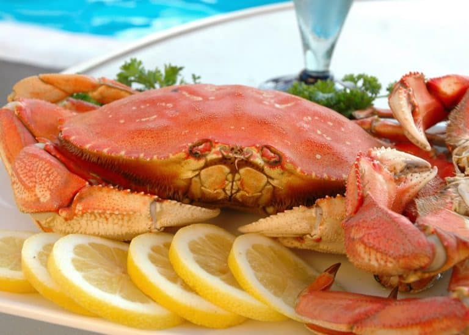
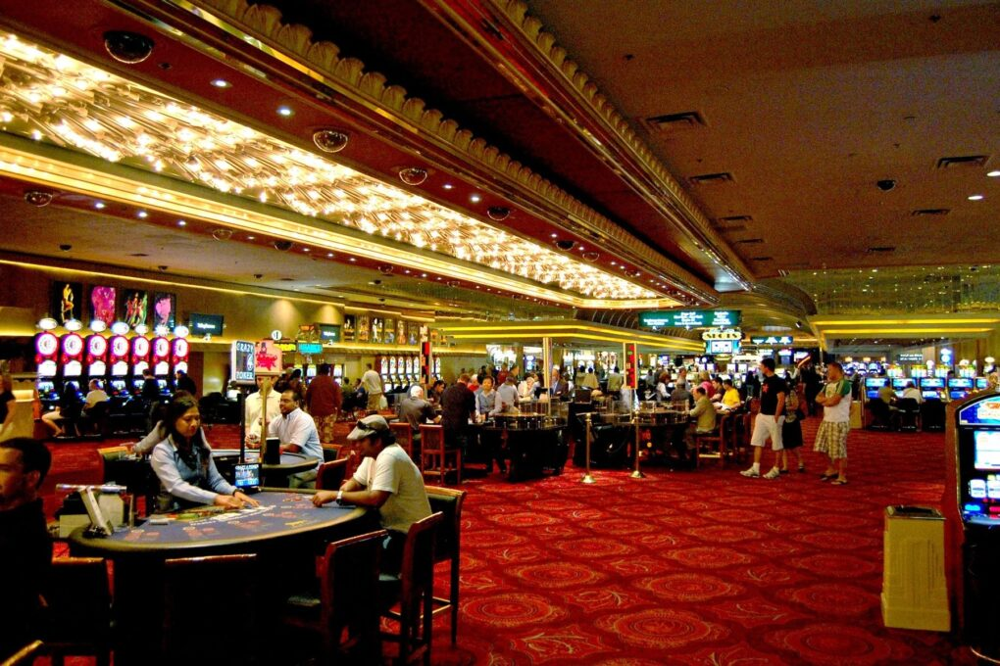
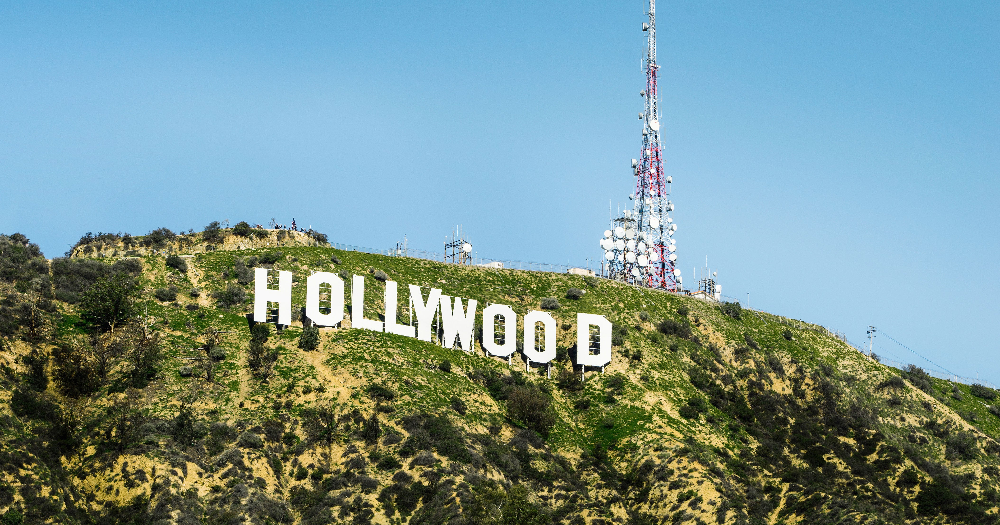
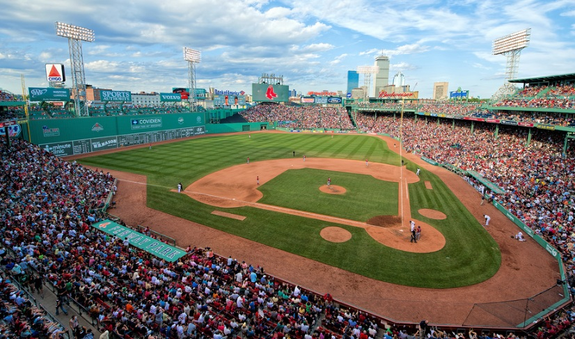
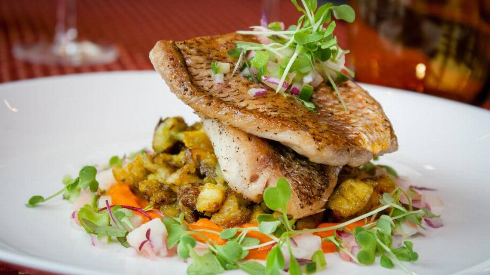
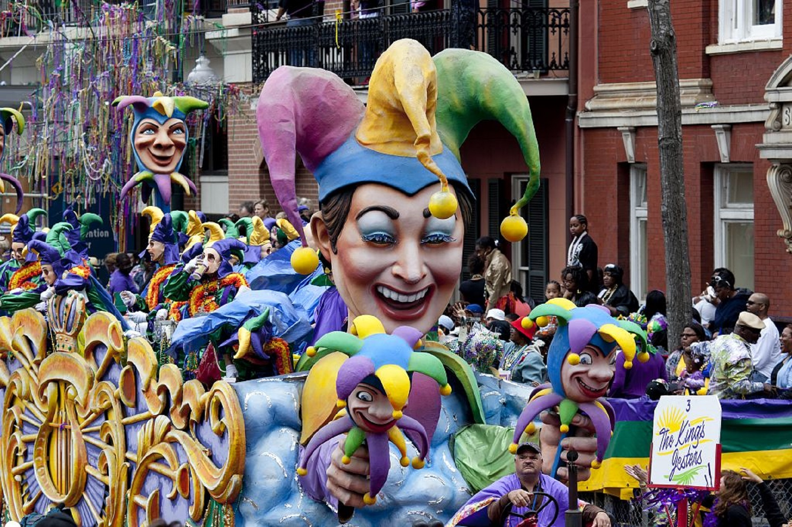
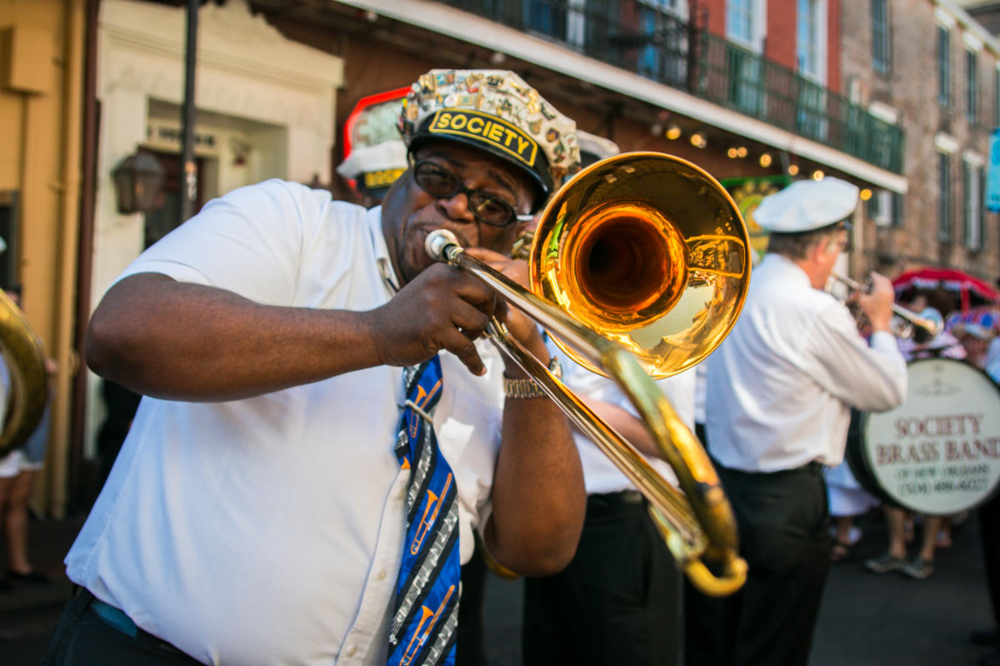

Villes et Lieux Insolites

New York
La ville qui ne dort jamais offre une architecture étonnante, une gastronomie variée et une multitude d'activités à faire.
C'est l'une des plus grandes métropoles du monde, connue pour son architecture emblématique, sa scène culturelle vibrante et ses célèbres quartiers tels que Manhattan, Brooklyn, Queens et le Bronx.
New York est également un centre financier important, abritant la Bourse de New York et de nombreuses entreprises mondiales. Le tourisme est également une industrie importante de la ville, avec des attractions telles que la Statue de la Liberté, Central Park et l'Empire State Building.
Activités : New York est une ville offrant une variété d'activités pour tous les goûts. Voici quelques-unes des activités les plus populaires à faire à New York:
Visiter les monuments emblématiques: la Statue de la Liberté, Central Park, l'Empire State Building, le One World Trade Center, etc.
Découvrir le patrimoine culturel: visitez les musées tels que le Metropolitan Museum of Art, le Museum of Modern Art et le Guggenheim Museum.
Assister à un spectacle de Broadway: New York est le berceau de la comédie musicale et abrite de nombreux théâtres proposant des spectacles de Broadway.
Magasiner dans les quartiers branchés: découvrez les boutiques uniques de Soho, de Greenwich Village et de Chelsea.
Explorer les quartiers historiques: découvrez l'architecture et l'histoire de quartiers tels que Little Italy, Chinatown et Brooklyn Heights.
Déguster la cuisine locale: découvrez les plats classiques de New York, tels que les bagels, les pizzas, les hot-dogs et les sandwichs au pastrami.
Profiter de la vie nocturne: découvrez les bars, les clubs et les music halls de New York pour une soirée animée.
En somme, New York offre une variété d'activités pour tous les goûts et tous les âges, offrant une expérience unique et inoubliable pour les visiteurs et les résidents.

Gastronomie : La cuisine new-yorkaise est souvent associée à des plats classiques tels que les bagels, les pizzas, les hot-dogs et les sandwichs au pastrami. Cependant, la ville offre également une cuisine internationale de haute qualité, notamment des restaurants de cuisine asiatique, européenne, africaine et latino-américaine.
En plus de la nourriture, New York est également célèbre pour ses bars et ses clubs de mixologie, qui proposent une large gamme de cocktails et de boissons alcoolisées. La scène gastronomique de New York continue de se développer et de se diversifier, offrant des expériences culinaires uniques et mémorables pour les visiteurs et les résidents.

San Francisco
Cette ville située sur la côte ouest offre une vue imprenable sur le Golden Gate Bridge, ainsi qu'une cuisine délicieuse et une vie nocturne animée.San Francisco est une ville située sur la côte ouest des États-Unis, en Californie.
C'est une destination populaire pour les touristes en raison de sa scène culturelle vibrante, de ses attractions historiques et de ses vues imprenables sur la baie de San Francisco.
Parmi les sites les plus populaires figurent le Golden Gate Bridge, Alcatraz Island, Fisherman's Wharf et Chinatown.
La ville est également connue pour son innovation technologique, en particulier dans l'industrie de la haute technologie, avec de nombreuses entreprises telles que Google, Apple et Twitter ayant leur siège à San Francisco.
Activités : San Francisco propose de nombreuses options pour les visiteurs et les résidents. Voici quelques-unes des activités les plus populaires à faire à San Francisco:
Marcher sur le Golden Gate Bridge: ce pont emblématique offre une vue imprenable sur la baie de San Francisco.
Découvrir Alcatraz Island: visitez la prison abandonnée d'Alcatraz et en apprenez plus sur son histoire riche.
Explorer le Fisherman's Wharf: découvrez les boutiques, les restaurants et les activités de ce quartier animé de San Francisco.
Visiter le Musée d'art moderne de San Francisco: ce musée abrite une collection d'art moderne et contemporain.
Parcourir le parc Golden Gate Park: ce parc urbain de plus de 1 000 hectares offre des activités pour tous les âges.
Déguster de la cuisine inventive: découvrez les restaurants proposant une cuisine inventive, reflétant les influences locales et internationales.
En somme, San Francisco offre une variété d'activités et de scènes gastronomiques pour tous les goûts, offrant une expérience unique et inoubliable pour les visiteurs et les résidents.

Gastronomie : San Francisco est célèbre pour sa cuisine locale et inventive, qui reflète les influences de la cuisine californienne, asiatique et mexicaine. La ville abrite également de nombreux restaurants gastronomiques renommés ainsi que des food trucks de rue proposant des plats de rue délicieux.

Las Vegas
Cette ville du désert est connue pour ses casinos flamboyants et ses spectacles incroyables. Il y a également de nombreux restaurants de renom et des activités en plein air à découvrir.
Las Vegas offre également une variété d'autres activités, notamment des centres commerciaux, des restaurants, des parcs d'attractions et des musées. La ville est également une destination populaire pour les mariages, les réunions d'affaires et les congrès.
Las Vegas est située dans le désert de Mojave, ce qui en fait un endroit chaud et aride. Cependant, grâce à son climat désertique, la ville offre également de nombreuses activités de plein air, telles que la randonnée, la vélo et le camping.

Activités : Las Vegas propose une variété d'options pour les visiteurs et les résidents. Voici quelques-unes des activités les plus populaires à faire à Las Vegas:
Assister à un spectacle de casino: Las Vegas abrite de nombreux spectacles de casinos, allant de la musique en direct à des shows de magie.
Faire du shopping dans les centres commerciaux: découvrez les nombreux centres commerciaux de luxe de Las Vegas, notamment le Forum Shops au Caesars Palace.
Visiter les musées: découvrez les musées de Las Vegas, tels que le Musée de la mobilité et le Musée de la conscience.
Profiter des piscines des casinos: Les casinos de Las Vegas proposent souvent des piscines luxueuses pour se détendre et se bronzer.
Déguster de la cuisine de haut niveau: découvrez les restaurants gastronomiques de Las Vegas, dirigés par des chefs célèbres tels que Gordon Ramsay et Emeril Lagasse.
Gastronomie : Las Vegas est un véritable paradis pour les gourmets. La ville abrite de nombreux restaurants gastronomiques dirigés par des chefs célèbres, ainsi que des options de restauration plus abordables pour tous les budgets.

Los Angeles
Los Angeles est une ville située en Californie.
C'est la deuxième plus grande ville du pays et un centre économique, culturel et touristique important.
Los Angeles est célèbre pour sa scène cinématographique, en tant que maison d'Hollywood et du cinéma mondial.
La ville abrite également de nombreux sites touristiques, tels que le Walk of Fame, le Griffith Observatory et le Sunset Strip.
Enfin, Los Angeles est connue pour ses plages de renom, tels que Venice Beach et Malibu, ainsi que pour sa cuisine diversifiée et sa scène gastronomique en évolution.

Activités : Los Angeles propose une variété d'options pour les visiteurs et les résidents. Voici quelques-unes des activités les plus populaires à faire à Los Angeles:
Visiter les plages célèbres: découvrez les plages emblématiques de Los Angeles, telles que Venice Beach et Santa Monica Beach.
Se promener dans les quartiers branchés: découvrez les quartiers branchés de Los Angeles, tels que Beverly Hills et West Hollywood.
Visiter les studios de cinéma: découvrez les coulisses de la production cinématographique en visitant les studios de cinéma de Los Angeles, tels que Universal Studios Hollywood.
Découvrir le musée d'art de Los Angeles (LACMA): ce musée abrite une collection d'art moderne et contemporain.
Se balader dans le Griffith Observatory: ce site offre une vue imprenable sur la ville de Los Angeles.
Déguster la cuisine californienne inventive: découvrez les restaurants proposant une cuisine inventive, reflétant les influences locales et internationales.

Gastronomie : Los Angeles abrite une variété de restaurants, allant des options de restauration rapide aux restaurants gastronomiques renommés. La ville est particulièrement connue pour sa cuisine californienne inventive, qui reflète les influences de la cuisine mexicaine, asiatique et méditerranéenne.

Washington D.C.
Washington D.C. est la capitale des États-Unis.
C'est un centre politique important et abrite le siège du gouvernement fédéral, y compris la Maison Blanche, le Capitole et le Supreme Court.
La ville est également connue pour ses nombreux musées et monuments, tels que le Lincoln Memorial, le National Mall et le National Museum of American History.
Washington D.C. attire également de nombreux touristes pour sa riche histoire et son patrimoine culturel.

Activités : Washington D.C. propose une variété d'options pour les visiteurs et les résidents. Voici quelques-unes des activités les plus populaires à faire à Washington D.C.:
Visiter le Lincoln Memorial: ce monument historique célèbre la vie et les réalisations du 16ème président des États-Unis, Abraham Lincoln.
Se promener dans le National Mall: ce parc national accueille plusieurs monuments et musées importants, tels que le Washington Monument, le Smithsonian National Museum of American History et le National Museum of Natural History.
Visiter le musée d'art américain: ce musée abrite une collection d'art américain, allant de la peinture à la sculpture.
Se balader dans les quartiers historiques: découvrez les quartiers historiques de Washington D.C., tels que Georgetown et Dupont Circle.
Visiter la Maison-Blanche: ce bâtiment abrite le président des États-Unis et est un symbole important de la politique américaine.
Déguster la cuisine locale et internationale: découvrez les restaurants proposant une cuisine locale, internationale, traditionnelle et moderne.
Gastronomie : En matière de gastronomie, Washington D.C. abrite une variété de restaurants proposant une cuisine locale, internationale, traditionnelle et moderne. La ville est particulièrement connue pour ses restaurants gastronomiques renommés et pour ses stands de street food de renom.
Philadelphie
Philadelphia est une ville historique qui a joué un rôle important dans la fondation des États-Unis, notamment en tant que siège de la révolution américaine et en accueillant la signature de la Déclaration d'indépendance en 1776.
Philadelphia est également connue pour son architecture historique, ses nombreux musées et son riche patrimoine culinaire, notamment le sandwich à la viande de Philly.
La ville abrite également de nombreux parcs et espaces verts, ainsi que le Liberty Bell, un symbole important de la liberté américaine.
Activités : Il y a beaucoup d'activités à faire dans la ville, telles que la visite de l'Independence Hall, où la Déclaration d'Indépendance a été signée en 1776, ou le Musée d'Art de Philadelphie, qui abrite une collection remarquable de peintures américaines et européennes. Les amateurs de sport peuvent assister à un match des Eagles de Philadelphie ou des 76ers de Philadelphie au Lincoln Financial Field ou au Wells Fargo Center.
Gastronomie : Philadelphie est célèbre pour son "cheesesteak", un sandwich au steak haché et au fromage fondu qui est un must pour les gourmets. La ville est également connue pour ses pretzels frais, ses hoagies (sandwichs au pain long) et ses délicieux desserts, tels que le water ice et les beignets. Il y a également une scène culinaire en constante évolution, avec de nombreux restaurants proposant une cuisine inventive et des plats locaux.
Boston
Boston est une ville tout autant historique que Philadelphie, car elle a également joué un rôle important dans la fondation des États-Unis en tant que centre de la révolution américaine.
Boston est connu pour ses nombreux sites historiques, tels que le Freedom Trail, le Old North Church et le USS Constitution Museum. La ville est également réputée pour son université prestigieuse, Harvard, ainsi que pour ses nombreux parcs et espaces verts.
Enfin, Boston est célèbre pour sa cuisine locale, telle que le "Boston Clam Chowder" et les "Boston Baked Beans".

Activités : Boston offre une variété d'options pour les visiteurs et les résidents. Voici quelques-unes des activités les plus populaires à faire à Boston:
Visiter le Freedom Trail: ce sentier historique vous guide à travers 16 lieux importants de l'histoire américaine, notamment le cimetière de la vieille église et le monument aux minutemen de Lexington.
Se promener dans le quartier historique de Beacon Hill: ce quartier historique est connu pour ses rues pavées, ses jolies maisons en brique et ses jardins publics.
Visiter le musée des sciences de Boston: ce musée interactif propose des expositions sur les sciences, la technologie, l'ingénierie et les mathématiques.
Découvrir la culture de la bière à Boston: la ville abrite plusieurs brasseries locales, pubs et festivals de bière.
Participer à un match de base-ball au Fenway Park: ce stade emblématique est la plus ancienne installation sportive en activité des États-Unis et est le foyer des Red Sox de Boston.
Se promener dans le jardin public de Boston: ce parc de plus de 50 hectares est un lieu de détente populaire pour les habitants de la ville.
En somme, Boston est une destination idéale pour les amateurs d'histoire, de culture et de gastronomie, offrant une expérience unique et enrichissante pour les visiteurs et les résidents.
Gastronomie : Boston est célèbre pour ses fruits de mer frais, ses plats traditionnels bostoniens tels que le chowder (potage aux fruits de mer) et les baked beans (haricots cuits au four), ainsi que pour ses nombreux restaurants proposant une cuisine locale, internationale et gastronomique de haut niveau.

Atlanta
Atlanta est ville moderne et dynamique, connue pour son rôle important dans les affaires, la finance et la technologie.
Atlanta est également une destination touristique populaire pour ses nombreux sites historiques, tels que la Maison Martin Luther King Jr. et la Oakland Cemetery. La ville abrite également le World of Coca-Cola, un musée consacré à l'histoire de la célèbre marque de boissons.
Enfin, Atlanta est célèbre pour son street art, sa cuisine locale, telle que le "Southern Comfort Food", et son rôle important dans la musique et la culture afro-américaine.
Activités : Atlanta offre une variété d'options pour les visiteurs et les résidents. Voici quelques-unes des activités les plus populaires à faire à Atlanta:
Visiter le Martin Luther King Jr. National Historical Park: ce parc national comprend la maison natale du révérend Martin Luther King Jr., sa tombe et l'église Ebenezer Baptist Church, où il a prêché.
Se promener dans le High Museum of Art: ce musée d'art moderne et contemporain abrite une collection éclectique d'art européen, africain et américain.
Se détendre dans le parc Piedmont: ce parc urbain de 185 hectares offre des activités de plein air pour tous les âges, notamment des jardins botaniques, des terrains de jeux pour enfants et des sentiers de randonnée.
Visiter le World of Coca-Cola: ce musée interactif explore l'histoire de la célèbre marque de boissons gazeuses, avec des expositions sur la fabrication, la publicité et les boissons.
Participer à un match de base-ball des Braves d'Atlanta: le stade SunTrust Park est le foyer des Braves d'Atlanta et propose des activités pour tous les âges, des concerts et des événements tout au long de la saison.
Découvrir la cuisine sud-américaine dans le quartier de West Midtown: ce quartier en évolution abrite de nombreux restaurants proposant une cuisine sud-américaine inventive, ainsi que des bars et des magasins branchés.
Gastronomie : Atlanta est réputée pour ses plats de cuisine sud-américaine, tels que le fried chicken (poulet frit) et les collard greens (feuilles de chou frisé), ainsi que pour sa scène gastronomique en constante évolution qui propose une cuisine internationale variée et inventive.
Miami
Miami est une destination touristique populaire pour ses plages de sable blanc et ses eaux turquoises.
Miami est également connue pour son architecture Art déco, son quartier cubain animé et sa vie nocturne effervescente.
La ville est un centre culturel et économique important, notamment pour les affaires, la finance et le commerce international.
Enfin, Miami est célèbre pour sa cuisine locale, telle que les "Cuban Sandwiches" et les "Stone Crabs".
Activités : Miami offre de nombreuses options pour les visiteurs et les résidents. Voici quelques-unes des activités les plus populaires à faire à Miami:
Se détendre sur la plage de South Beach: cette plage célèbre est connue pour son sable blanc et son ambiance animée.
Visiter le musée de l'Art de Miami: ce musée abrite une collection éclectique d'art moderne et contemporain, ainsi que des expositions temporaires et des événements spéciaux.
Découvrir le quartier de Little Havana: ce quartier cubain historique est connu pour ses magasins, ses restaurants et ses fêtes de la rue.
Participer à un match des Marlins de Miami: le Marlins Park est le foyer des Marlins de Miami et propose des activités pour tous les âges, des concerts et des événements tout au long de la saison.
Se promener dans le jardin botanique de Miami: ce jardin tropical offre une vue sur les plantes exotiques et les animaux de la Floride.
Déguster de la cuisine cubaine dans le quartier de Little Havana: ce quartier regorge de restaurants proposant de la cuisine cubaine traditionnelle, tels que des sandwichs cubains, des plats de riz et de haricots noirs et de la viande grillée.

Gastronomie : Miami propose une cuisine cubaine traditionnelle, ainsi que des options gastronomiques plus modernes, telles que des restaurants de poissons et fruits de mer, des restaurants de fruits de mer, des restaurants de cuisine néo-latine et des restaurants gastronomiques proposant une cuisine inventive.

La Nouvelle-Orléans
La Nouvelle-Orléans est riche en histoire et en culture, connue pour son patrimoine français et espagnol.
La Nouvelle-Orléans est célèbre pour sa musique, telle que le jazz, la musique de la Nouvelle-Orléans et le blues, ainsi que pour sa cuisine, notamment les plats cajuns et creoles.
La ville abrite également de nombreux festivals célèbres, tels que le Mardi Gras et le Jazz Fest. Enfin, La Nouvelle-Orléans est connue pour ses bâtiments historiques, tels que le French Quarter et le St. Louis Cathedral, ainsi que pour son architecture colorée et ses rues animées.


Activités : La Nouvelle-Orléans propose un large éventail d'options pour les visiteurs et les résidents. Voici quelques-unes des activités les plus populaires à faire à La Nouvelle-Orléans:
Se promener dans le Quartier Français: ce quartier historique est célèbre pour ses bâtiments colorés, ses rues pavées et ses galeries d'art.
Participer à la célébration du Mardi Gras: le Mardi Gras est l'une des fêtes les plus célèbres de La Nouvelle-Orléans, avec des défilés colorés, de la musique en direct et des activités animées pour les visiteurs et les résidents.
Visiter le cimetière Saint-Louis: ce cimetière historique est connu pour ses tombes intéressantes et ses sculptures complexes.
Se détendre dans le parc de City Park: ce parc de 1300 hectares offre des activités pour tous les âges, notamment des chemins pédestres, des étangs pour la pêche, des terrains de golf et un jardin botanique.
Participer à un concert de jazz: La Nouvelle-Orléans est célèbre pour sa scène de jazz animée, avec des concerts tous les soirs dans des clubs de jazz et des bars à cocktails historiques.
Déguster de la cuisine créole dans un restaurant local: La Nouvelle-Orléans propose une cuisine créole riche et délicieuse, servie dans des restaurants renommés tels que Commanders Palace, Galatoire's et Dooky Chase's.
Gastronomie: la cuisine de La Nouvelle-Orléans est une fusion de cultures française, africaine, créole et cajun. Les plats célèbres incluent des écrevisses étouffées, des jambalayas, des gumbos, des po'boys, des beignets et bien plus encore. La ville regorge de restaurants renommés, de bars à cocktails historiques et de petits stands de nourriture qui proposent une cuisine authentique.
Honolulu
Honolulu est la capitale et la ville la plus peuplée de l'État d'Hawaii.
C'est une destination touristique populaire pour ses plages de sable blanc et ses eaux turquoises, ainsi que pour son climat tropical.
Honolulu est également célèbre pour son patrimoine historique, tels que le Palais Iolani et le sanctuaire de la reine Liliuokalani.
La ville abrite également de nombreux musées, tels que le Musée d'art de Honolulu et le Musée Bishop, ainsi que des sites naturels, tels que le Diamond Head et les jardins botaniques de Foster.
Enfin, Honolulu est connue pour sa cuisine locale, telle que le "plate lunch" et le "Poke", ainsi que pour sa scène musicale hawaïenne.


Activités : Honolulu propose un large éventail d'options pour les visiteurs et les résidents. Voici quelques-unes des activités les plus populaires à faire à Honolulu:
Se détendre sur Waikiki Beach: cette plage célèbre est un incontournable pour les visiteurs, avec des activités telles que le surf, la natation, le paddleboarding et la plongée.
Visiter le Musée Bishop: ce musée d'histoire naturelle propose des expositions sur la faune et la flore hawaïennes, ainsi que sur la culture et l'histoire de Hawaï.
Explorer le Diamond Head State Monument: ce monument naturel offre une vue imprenable sur Honolulu et la mer, ainsi que des sentiers de randonnée pour les amateurs de plein air.
Assister à un spectacle de hula: les spectacles de hula sont un aspect important de la culture hawaïenne, avec des performances de danse traditionnelle dans les hôtels, les restaurants et les théâtres de la ville.
Déguster des plats hawaïens traditionnels dans un restaurant local: Honolulu propose une cuisine hawaïenne délicieuse, avec des plats tels que le poi, le kalua pig et le laulau, servis dans des restaurants tels que Helena's Hawaiian Food et Ono Seafood.
Participer à une excursion dans les îles hawaïennes: Honolulu est le point de départ idéal pour explorer les îles hawaïennes, avec des excursions en bateau, en avion ou en hélicoptère pour visiter les îles voisines telles que Maui, Kauai et le Big Island.

Gastronomie : Honolulu propose une cuisine variée, allant des plats hawaïens traditionnels à la cuisine asiatique, en passant par la cuisine américaine moderne. Les plats célèbres incluent le poke, le spam musubi, le loco moco et le manapua. Il y a également de nombreux restaurants renommés qui proposent une cuisine inventive, ainsi que des stands de nourriture pop-up et des trucks à nourriture pour les goûters rapides.

La Statue de la Liberté
La Statue de la Liberté est un monument emblématique des États-Unis situé sur une île près de New York Harbor.
Il a été offert par les citoyens français en 1886 pour célébrer le centenaire de l'indépendance américaine. La statue, conçue par Frédéric Auguste Bartholdi, représente une figure féminine tenant une torche dans une main et un livre ouvert dans l'autre, symbolisant l'éclairage et la démocratie.
La Statue de la Liberté est considérée comme l'un des monuments les plus célèbres du monde et est devenue un symbole de l'immigration américaine, accueillant des millions de visiteurs chaque année. Les visiteurs peuvent monter jusqu'au sommet de la statue pour une vue panoramique sur New York Harbor et la ville de New York.

Le Grand Canyon
Le Grand Canyon est un site naturel situé dans le nord de l'Arizona aux États-Unis.
Le Grand Canyon est connu pour ses couches de roches de différentes couleurs et âges exposées par l'érosion, offrant un aperçu unique de l'histoire géologique de la Terre. Il est considéré comme l'une des plus grandes merveilles naturelles du monde et est un parc national populaire pour les randonnées, les activités en plein air et les excursions en rafting en eau vive.

Monument Valley
Monument Valley est un paysage naturel emblématique des États-Unis, situé dans l'Arizona et l'Utah. Il se compose de formations de roches en grès rouge caractéristiques, telles que des buttes et des méandres imposants.
C'est un lieu de tournage fréquent pour des films et des publicités, en raison de sa beauté naturelle et de son paysage unique. Monument Valley est également un site sacré pour les Navajo, qui habitent la région et considèrent les formations rocheuses comme des lieux spirituels importants.

Death Valley
La Death Valley (La Vallée de la Mort en français) est une vallée aride et inhospitalière, renommée pour ses paysages désertiques uniques et ses températures extrêmement élevées.
La Vallée de la Mort abrite également des géomorphologies intéressantes telles que des formations rocheuses uniques, des dunes de sable, et des canyons. C'est un site touristique populaire pour les amateurs de nature et d'aventure.

La Grande Forêt de Sequoias
Cette Forêt est célèbre pour ses arbres géants de la famille des séquoias, qui sont les plus grands arbres du monde par leur volume.
La forêt abrite également d'autres espèces d'arbres anciennes et diverses formes de vie animale. Les séquoias géants attirent des milliers de visiteurs chaque année, qui viennent explorer les forêts et admirer les arbres imposants. Les séquoias géants sont considérés comme des symboles de la puissance de la nature et de la résistance à travers les âges.

Le Mont Rushmore
Monument national situé dans le Dakota du Sud, aux États-Unis. Il est célèbre pour ses sculptures géantes de la tête de quatre présidents américains : George Washington, Thomas Jefferson, Theodore Roosevelt et Abraham Lincoln. Les sculptures ont été creusées à même la montagne au cours de plusieurs années par le sculpteur Gutzon Borglum et son équipe. Le Mont Rushmore est devenu un symbole important de l'histoire et de l'identité américaines, et il attire des millions de visiteurs chaque année.
Alcatraz
Alcatraz est une île située en face de San Francisco.
Elle est célèbre pour avoir été utilisée comme prison fédérale pendant plusieurs décennies, entre les années 1930 et 1960.
Alcatraz a été considérée comme l'une des prisons les plus sûres et les plus inévadables de l'époque, et elle a accueilli de nombreux criminels célèbres. Depuis son abandon en 1963, l'île a été transformée en parc national et est ouverte aux visiteurs, qui peuvent explorer les bâtiments historiques et apprendre sur son passé. Alcatraz est devenu un site touristique populaire et un symbole de la justice pénale aux États-Unis.
Le Yellowstone
Le Yellowstone est le plus ancien parc national des États-Unis et l'un des plus importants du monde.
Il est situé principalement dans l'État du Wyoming, mais s'étend également dans les États de Montana et d'Idaho. Yellowstone est célèbre pour ses geysers uniques et ses sources chaudes, ainsi que pour ses paysages spectaculaires de montagnes, de lacs et de forêts.
Le parc abrite également une faune diversifiée, notamment des ours, des bisons, des loups et des élans. Yellowstone est visité par des millions de personnes chaque année et est considéré comme un joyau de la nature américaine.

Le Grand Téton
Le Grand Teton est un massif montagneux situé dans le parc national de Grand Teton, dans l'État du Wyoming, aux États-Unis. Il s'agit du plus haut sommet du parc et est célèbre pour sa forme distincte et son relief escarpé.
Le Grand Teton est un site de randonnée populaire, offrant des vues spectaculaires sur les montagnes et les vallées environnantes. Le parc national de Grand Teton abrite également une faune variée, notamment des grizzlis, des bisons, des élans et des oiseaux migrateurs.
Le Grand Teton est considéré comme un symbole de la beauté sauvage de l'Ouest américain.
Merci de votre visite et à bientôt